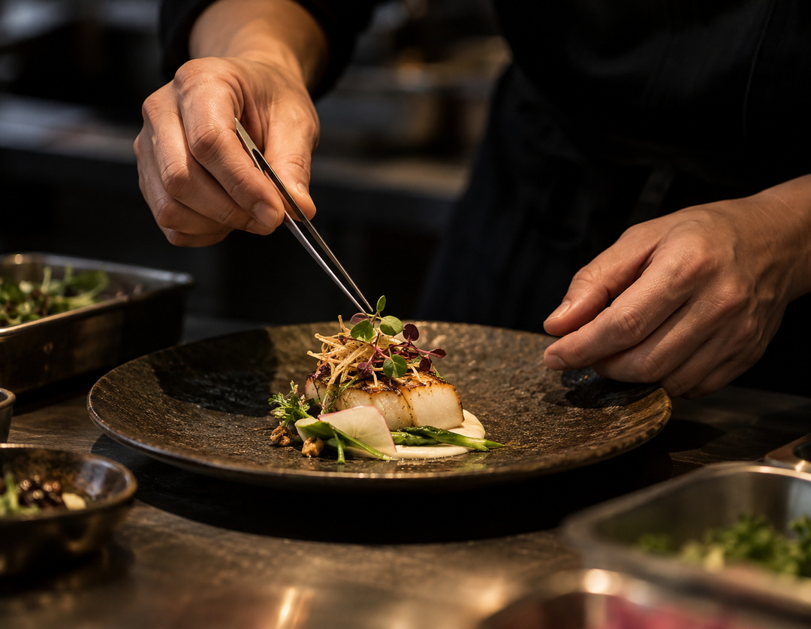

한식 코스 · 파인다이닝
소반의 한 상
제철 재료로
그날의 코스를 냅니다
카운터 8석 · 룸 4석
점심 7품 · 저녁 11품
점심 7품 · 저녁 11품
 서울 강남구 소반길 12
서울 강남구 소반길 12건물 지하 2시간
소개
조용한 데 앉아
천천히 드시라고
열두 자리뿐입니다. 그날 들어온 재료를 보고 코스를 정하기 때문에 메뉴는 매일 조금씩 다릅니다. 서두르지 않으셔도 되도록 두 시간을 비워 두었습니다.

카운터 8석 · 룸 4석
약 2시간
- 자리
- 카운터 8석 · 룸 4석
- 코스
- 점심 7품 · 저녁 11품
- 소요
- 약 2시간

예약
자리를 잡아 두겠습니다
보내 주시면 하루 안에 전화로 확인해 드립니다.